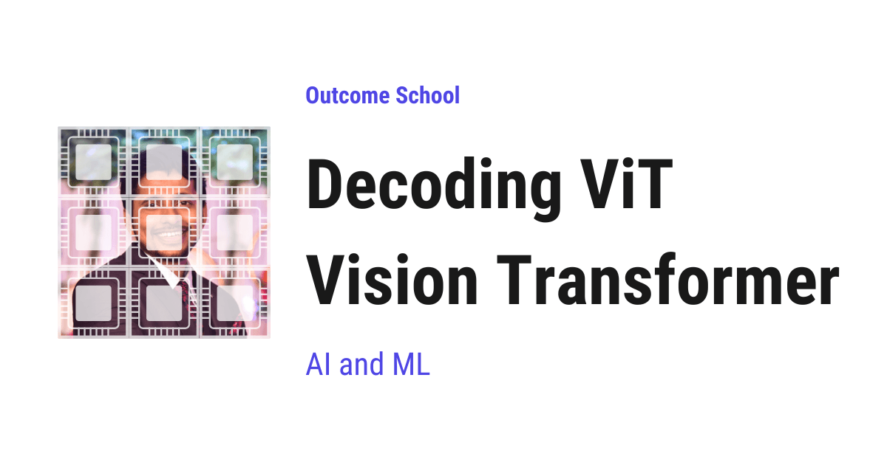

What is a Vision Transformer (ViT) and How Does It Work?
On this page
- The Big Picture
- Decoding Step 1: Splitting the Image into Patches
- Decoding Step 2: Patch Embedding
- Decoding Step 3: The CLS Token
- Decoding Step 4: Position Embeddings
- Decoding Step 5: The Transformer Encoder
- Decoding Step 6: The Classification Head
- Putting It All Together
- ViT vs CNN
- Quick Summary
- Frequently Asked Questions

A Vision Transformer (ViT) treats an image the same way a transformer treats a sentence. It splits the image into small patches, treats each patch as a token, and processes them with a transformer to classify the image.
In this blog, we will learn about the Vision Transformer (ViT) by decoding how it splits an image into patches, turns those patches into tokens, and processes them with a transformer to classify the image.
Before Vision Transformers, image classification was dominated by Convolutional Neural Networks (CNNs) like ResNet, VGG, and etc. The transformer architecture was only used for text. Then, in 2020, Google researchers asked a simple question - "Can we apply the transformer architecture directly to images?" The answer was yes, and the Vision Transformer (ViT) was born in the paper titled "An Image is Worth 16x16 Words".
When we hear "applying transformers to images", it sounds complex. But do not worry. If we break it down into its individual parts, every single piece is simple.
Our goal is to decode ViT so clearly that by the end, we will be able to explain how ViT works to anyone.
We will cover the following:
- The Big Picture
- Decoding Step 1: Splitting the Image into Patches
- Decoding Step 2: Patch Embedding
- Decoding Step 3: The CLS Token
- Decoding Step 4: Position Embeddings
- Decoding Step 5: The Transformer Encoder
- Decoding Step 6: The Classification Head
- Putting It All Together
- ViT vs CNN
- Quick Summary
Let's get started.
The Big Picture
Before we go into the details, let's understand the big picture.
ViT treats an image the same way a transformer treats a sentence. A sentence is a sequence of words (tokens). ViT splits an image into a sequence of small patches and treats each patch as a token. These patch tokens are then processed by a standard transformer encoder, just like text tokens.
In simple words:
Vision Transformer = Split image into patches (like words) + Process patches with a transformer (like processing a sentence).
Think of a jigsaw puzzle. We take a complete image, cut it into small square pieces, line up the pieces in a row, and hand them to the transformer. The transformer then looks at all the pieces together, understands how they relate to each other, and tells us what the image is.
The idea behind ViT is simple - if transformers work well for sequences of text tokens, they should also work for sequences of image patches.
A sentence like "the cat sat on the mat" is a sequence of 6 tokens. In the same way, an image becomes a sequence of patches. For example, a 224x224 image cut into 16x16 patches gives us 196 patches. Each patch is treated as a "visual word". The transformer does not care whether the tokens are words or image patches. It just processes the sequence and learns the relationships.
Now, let's decode ViT step by step.
Decoding Step 1: Splitting the Image into Patches
The first thing ViT does is split the input image into small non-overlapping square patches.
First, we take the input image. A standard ViT uses 224x224 pixel images. Then, we divide the image into non-overlapping square patches, each of size 16x16 pixels. Since 224 / 16 = 14, we get 14 patches along each side of the image. So the image becomes a 14 x 14 grid of patches, which gives us 14 x 14 = 196 patches in total.
Think of it like a chessboard, but with 14 rows and 14 columns instead of 8. Each square of this 14 x 14 board is one patch.
Now, a natural question arises - why 16x16? It is a sweet spot. Smaller patches (say 8x8) give us more tokens and finer detail, but the sequence length grows quickly and self-attention becomes very expensive. Bigger patches (say 32x32) give us fewer tokens and faster training, but the model loses fine-grained detail. 16x16 balances both, and that is why it became the default.
Original Image (224 x 224 pixels)
+----+----+----+----+----+ ... +----+
|P1 |P2 |P3 |P4 |P5 | |P14 |
+----+----+----+----+----+ ... +----+
|P15 |P16 |P17 |P18 |P19 | |P28 |
+----+----+----+----+----+ ... +----+
| | | | | | | |
... ... ... ... ... ...
+----+----+----+----+----+ ... +----+
|P183|P184|P185|P186|P187| |P196|
+----+----+----+----+----+ ... +----+
Each patch is 16 x 16 pixels
Total: 14 x 14 = 196 patches
Each patch captures a small region of the image. Some patches contain parts of the main object, some contain background, and some contain edges or textures.
This is how the image is broken down into a sequence. Now, let's move to the next step.
Decoding Step 2: Patch Embedding
Now, we have 196 patches. But the transformer does not understand raw pixels. It expects each token to be a fixed-size vector of numbers, called an embedding.
Each patch is a 16x16 pixel region with 3 color channels (RGB). So each patch is a small 3D block of 16 x 16 x 3 = 768 numbers, which is then flattened into a single vector of 768 numbers.
To turn each patch into a token that the transformer can process, we use a linear projection - a simple matrix multiplication that converts these 768 numbers into a vector of a fixed dimension (768 for ViT-Base). Even though the input and output dimensions are the same here, this is not an identity mapping. The projection matrix is learned during training so that the output embedding captures the useful visual features of the patch, not just raw pixel values.
Patch (16 x 16 x 3, a 3D block of pixels)
|
v
[Flatten into a 768-dimensional vector]
|
v
[Linear Projection (768 -> 768)]
|
v
Patch Embedding (768-dimensional vector)
In practice, this linear projection is implemented as a convolution with kernel size 16x16 and stride 16. Do not worry if this sounds heavy. It is just an implementation detail, not a new concept - it is mathematically the same as cutting the image into 16x16 patches and projecting each one.
After this step, we have 196 patch embeddings, each of dimension 768. This is our sequence of "visual tokens", ready for the transformer.
This was all about converting patches to embeddings. Now, let's decode the next piece.
Decoding Step 3: The CLS Token
Now, a natural question arises - once the transformer has processed all 196 patch tokens, which token do we use to make the final prediction? Each patch only sees a small part of the image, so no single patch token fully represents the whole image.
The answer is simple: we add a special learnable token called the CLS token (short for "classification token") to the beginning of the sequence.
Sequence: [CLS, Patch1, Patch2, Patch3, ..., Patch196]
Total tokens: 197 (1 CLS + 196 patches)
The CLS token does not correspond to any image patch. It starts as a learnable vector of 768 numbers. As the transformer processes the sequence, the CLS token attends to every patch and gathers information from all of them. By the end of the transformer, the CLS token contains a global summary of the entire image.
Think of the CLS token as a class representative. Every patch is like a student in a classroom. The CLS token listens to all the students, collects their information, and speaks on behalf of the whole class when the final answer is needed.
Now, let's decode the next piece.
Decoding Step 4: Position Embeddings
Here is the catch. When we split the image into patches and line them up as a sequence, the patches lose their spatial position. The transformer only sees a list of tokens. It does not know which patch was on the top-left and which was on the bottom-right.
But the position of a patch matters. A patch containing an eye on the top of the image and a patch containing a tail on the bottom together tell us it is a cat. If we shuffle the patches randomly, the image no longer makes sense.
So, here comes the position embedding to the rescue. For each position in the sequence (0 to 196), we add a learnable vector of 768 numbers. This vector acts like a tag that tells the transformer, "This patch came from position 5 in the original image."
Final input = Patch Embedding + Position Embedding
Token 0: CLS_embedding + Position_0
Token 1: Patch1_embedding + Position_1
Token 2: Patch2_embedding + Position_2
...
Token 196: Patch196_embedding + Position_196
The position embedding is simply added (element-wise) to the patch embedding. Now every token carries both "what" the patch looks like and "where" it was in the image.
Now, our sequence of 197 tokens is ready for the transformer. Let's move to the next step.
Decoding Step 5: The Transformer Encoder
The sequence of 197 tokens (CLS + 196 patches) is passed through a standard transformer encoder. We must be knowing how a transformer encoder works from text models - the same one comes into the picture here.
We have a detailed blog on Decoding Transformer Architecture that explains the transformer encoder in depth.
The encoder consists of multiple layers, and each layer contains three main components.
1. Multi-Head Self-Attention: Each token attends to every other token. This allows the model to learn relationships between different parts of the image. For example, a patch containing a cat's ear can attend to a patch containing a cat's eye, helping the model understand that they belong to the same object. This is the heart of ViT.
2. Feed-Forward Network: A two-layer neural network applied to each token independently. This adds non-linearity and increases the model's capacity. We have a detailed blog on Feed-Forward Networks in LLMs that explains this in depth.
3. Layer Normalization and Residual Connections: Standard transformer components that help with training stability.
Input: 197 tokens (each 768-dimensional)
|
v
[Layer 1: Multi-Head Self-Attention -> Feed-Forward Network]
|
v
[Layer 2: Multi-Head Self-Attention -> Feed-Forward Network]
|
v
... (12 layers in total)
|
v
Output: 197 tokens (each 768-dimensional)
After all the layers, each token has been enriched with information from all other tokens. The CLS token, in particular, has gathered information from all 196 patches and now contains a global representation of the entire image.
This is how the transformer encoder processes our sequence of visual tokens. Now, let's move to the final step.
Decoding Step 6: The Classification Head
The final CLS token representation is passed through a classification head, which is a simple linear layer that maps the 768-dimensional vector to the number of classes.
CLS token output (768-dimensional)
|
v
[Linear Layer (768 -> 1000)]
|
v
Class probabilities (1000 classes)
|
v
Prediction: "Golden Retriever" (class with highest probability)
The class with the highest probability is the model's prediction. It works perfectly.
Now, we have decoded every piece of ViT. Let's put them all together to see how ViT runs end to end.
Putting It All Together
Let's trace through the entire ViT pipeline end to end with concrete numbers for ViT-Base:
Input image (224 x 224 x 3 RGB)
|
v
[Step 1: Split into 14 x 14 = 196 patches of 16 x 16]
|
v
[Step 2: Patch embedding -> 196 vectors, each 768-dim]
|
v
[Step 3: Prepend CLS token -> 197 vectors, each 768-dim]
|
v
[Step 4: Add position embeddings -> 197 vectors, each 768-dim]
|
v
[Step 5: Transformer encoder (12 layers, 12 heads each)]
|
v
[Step 6: Take CLS token -> Linear (768 -> 1000)]
|
v
Prediction: "Golden Retriever"
Total parameters for ViT-Base: ~86 million.
ViT comes in three standard sizes - ViT-Base (~86M parameters, 12 layers), ViT-Large (~307M parameters, 24 layers), and ViT-Huge (~632M parameters, 32 layers). The bigger the model, the more data it needs to train well, but the better it performs once trained.
This is the complete flow of ViT from an input image to a final prediction.
ViT vs CNN
Now, a natural question arises - how does ViT compare to CNNs, which have been the standard for image classification for years?
Let me tabulate the differences between ViT and CNN for your better understanding so that you can decide which one to use based on your use case.
| Property | ViT | CNN (e.g. ResNet) |
|---|---|---|
| Core operation | Self-attention | Convolution |
| What each layer sees | The whole image from the very first layer | Only nearby pixels at first, more with depth |
| Built-in assumptions | Almost none, learns everything from data | Strong, assumes nearby pixels are related |
| Data requirement | Needs large datasets | Works with smaller datasets |
| Scalability | Scales well with data and compute | Scales, but less steeply at very large scale |
| Architecture | Uniform (same attention blocks) | Varied (different block types) |
| Image understanding | Understands global relationships | Understands local patterns first |
CNNs come with a built-in assumption that nearby pixels are more related than distant pixels. This assumption acts like a head start - the CNN does not have to learn this from scratch. ViT does not have this head start. It learns all spatial relationships from the data itself. This is why ViT needs more data to train well, but once trained on enough data, it can outperform CNNs because it is not limited by any built-in assumption.
Let's put this into perspective with real numbers:
- When trained only on ImageNet (~1.3 million images), ViT performs worse than a well-tuned ResNet of similar size.
- When pre-trained on JFT-300M (~300 million images) and then fine-tuned on ImageNet, ViT beats the best CNNs of the time.
- The lesson is simple - more data, more ViT wins. With small data, CNNs win because of their built-in head start.
Quick Summary
In one line:
ViT = image patches + transformer encoder.
Let's recap what we have decoded:
- Vision Transformer (ViT) applies the transformer architecture to images by treating image patches as tokens, just like words in a sentence.
- The process is - split the image into 16x16 patches, project each patch into an embedding, add a CLS token and position embeddings, process through a transformer encoder, and use the CLS token for classification.
- Patch embedding converts each 16x16x3 patch into a 768-dimensional vector using a linear projection.
- The CLS token aggregates information from all patches and is used for the final classification.
- Position embeddings tell the transformer where each patch came from in the original image.
- The transformer encoder uses multi-head self-attention so every patch can attend to every other patch, learning global relationships from the very first layer.
- ViT vs CNN: ViT looks at the whole image from the very first layer, while CNNs look at nearby pixels first. ViT needs more data but scales better.
- ViT has become the foundation for many modern vision models, including CLIP, DINO, self-supervised methods like I-JEPA, and the vision encoders used in multimodal models.
So we have learned about the Vision Transformer (ViT), how it splits an image into patches, processes them with a transformer encoder, and uses the CLS token to make the final prediction. We have also seen how ViT compares to CNNs and why it scales so well with more data.
Frequently Asked Questions
Does ViT work well on small datasets?
No. ViT needs large datasets to train well. When trained only on ImageNet, which has about 1.3 million images, ViT performs worse than a well-tuned ResNet of similar size. CNNs win with small data because they assume nearby pixels are related, which gives them a head start.
Why does ViT use 16x16 patches?
16x16 is a sweet spot between detail and cost. Smaller patches give more tokens and finer detail, but the sequence grows quickly and self-attention becomes very expensive. Bigger patches give fewer tokens and faster training, but the model loses fine-grained detail. That is why 16x16 became the default.
Does ViT use a transformer decoder?
No. ViT uses a standard transformer encoder, the same one used for text tokens. The encoder lets every patch attend to every other patch. The final CLS token is then passed through a simple linear classification head to make the prediction.
Does ViT know where each patch came from in the image?
Only because of position embeddings. When the patches are lined up as a sequence, they lose their spatial position, so a learnable position vector is added to each patch embedding. Without it, the transformer would not know which patch was on the top-left and which was on the bottom-right.
Which modern models are built on ViT?
ViT has become the foundation for many modern vision models. These include CLIP, DINO, self-supervised methods like I-JEPA, and the vision encoders used in multimodal models.